Nyzo version 537 (commit on GitHub) improves the consensus process and prepares for the transition from version 0 to version 1 of the blockchain.
This version only modifies verifier behavior significantly. While the code involved also affects other run modes of Nyzo, only verifiers will benefit from upgrading to this version.
Please note that this version does not attempt to correct the memory-pressure issues that initially caused verifiers to become unresponsive and slow down cycle processing. It does attempt to correct, from multiple angles, the stalls and ultimate one-block fork that caused so many verifiers and sentinels to fail. While slowdowns in block processing are undesirable, they are of little consequence as long as they do not lead to full stalls. These memory-pressure issues will be addressed in the near future.
BalanceListManager adds three fields: blockchainVersion, unlockThreshold, and unlockTransferSum. The blockchain version is currently 0. The changes necessary to lock the block-1 wallets will move the blockchain to version 1.
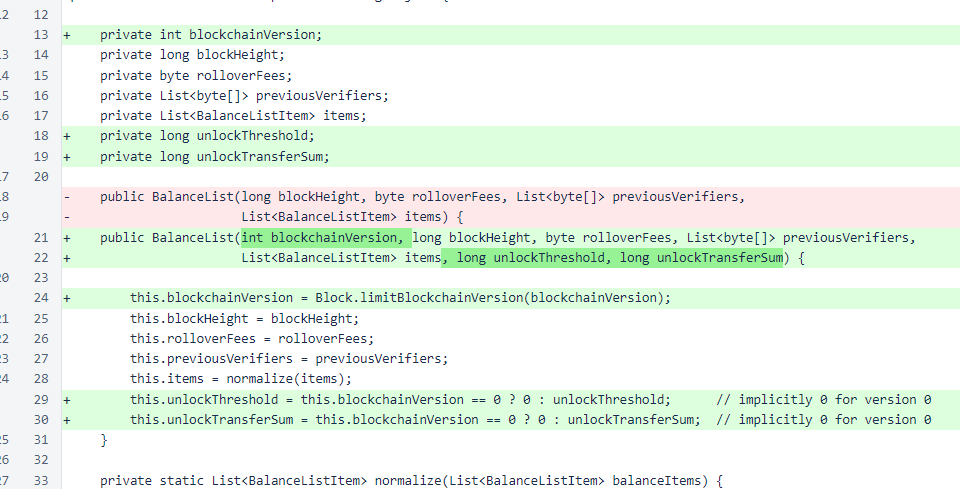Accessors have been added for the three new fields.
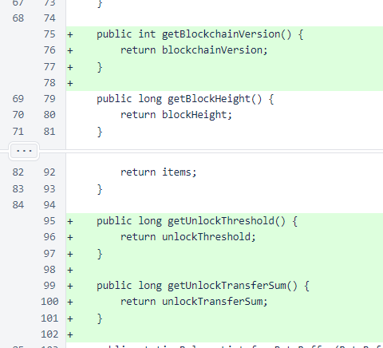So that the version can be used to guide further reading of the balance-list data structure, it has been placed as the very first field in the serialized binary structure. While this field was not actually present in the initial balance-list data structure, the layout of the serialized form allows us to pretend that it was present. The ShortLong class is used to encapsulate this behavior. 2 bytes of the space initially allocated for block height have been reallocated to store the blockchain version. As these bytes were the most-significant bytes of the block height (representing the largest powers of 2 in the binary representation), they have all represented values of 0 for all blocks produced so far, so this representation is naturally backward-compatible. The unlockThreshold and unlockTransferSum are at the end of the serialized data structure, and they are only read for version-1 or later balance lists.
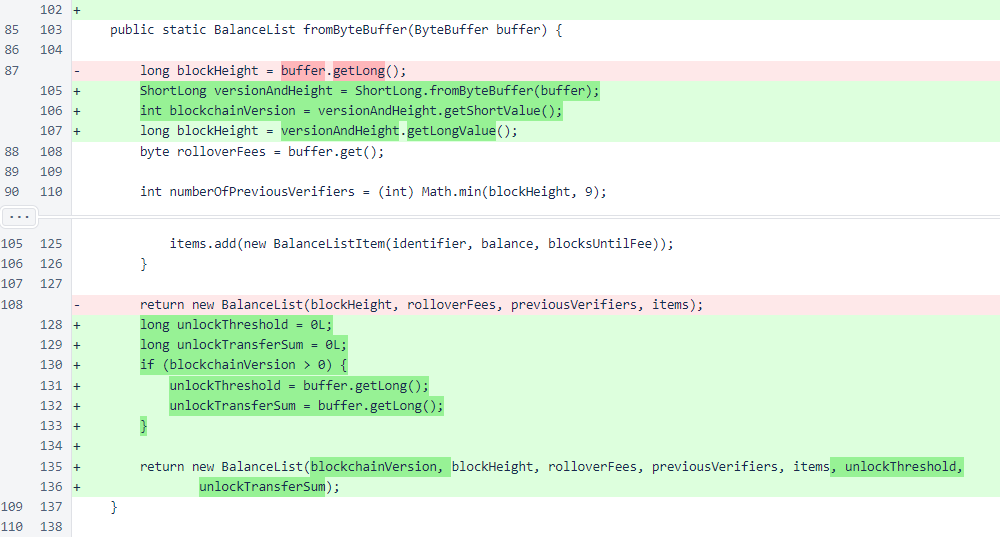The changes to the serialization method mirror the changes to the deserialization method.
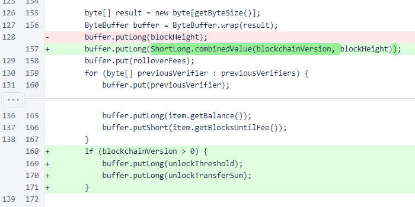The cycleAccountIdentifier has been added to BalanceListItem. This location was chosen because the transferIdentifier was already defined in this class.
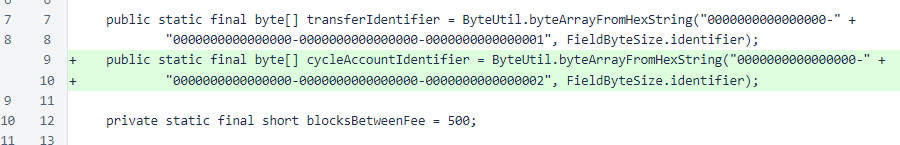In BalanceManager, the seedAccountIdentifier has been exposed as a public variable. It was exposed to allow its use in a script to calculate total coins in circulation.
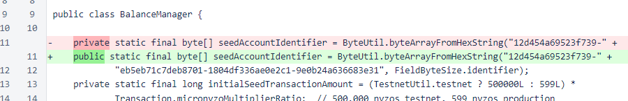In approvedTransactionsForBlock(), the balance list is fetched slightly earlier to allow its use in enforcing locked-wallet restrictions.
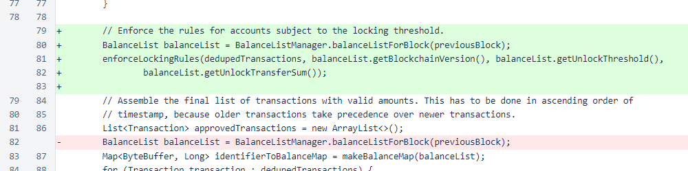The enforceLockingRules() method removes transactions that do not comply with the rules for locked accounts. In any block, if the sum of transactions from locked accounts exceeds the allowable amount, then all such transactions are removed from the block. This logic is important. If it does not operate properly, we might be able to transfer coins out of these wallets more quickly than we should be able to transfer them.
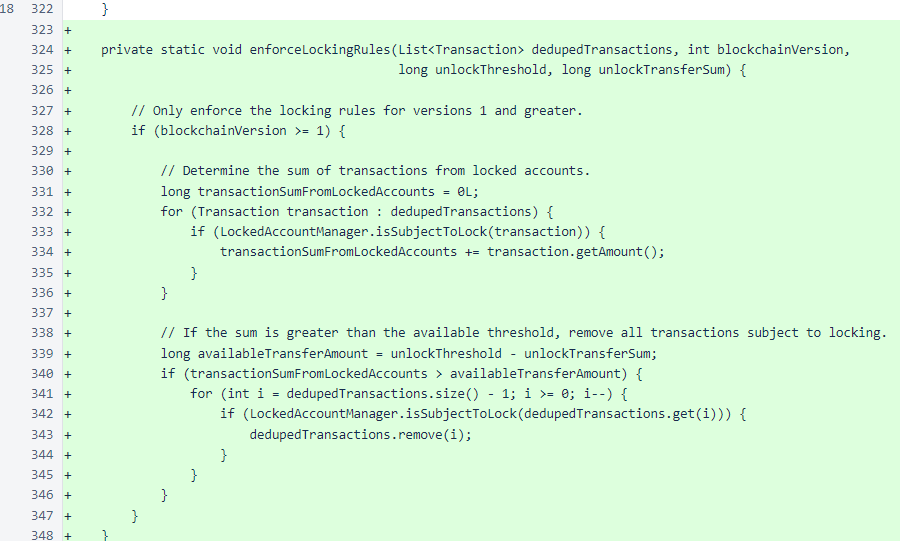In the Block class, constants have been added for minimumBlockchainVersion and maximumBlockchainVersion. Currently, the only supported blockchain version is 0, so it is both the minimum and maximum.
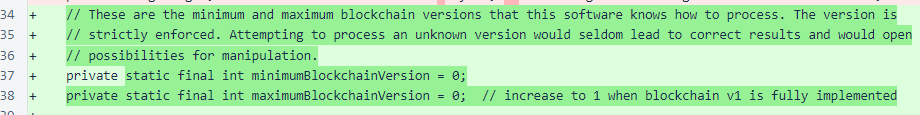The blockchainVersion field has been added to the Block data structure, and all 3 constructors now require the blockchain version.
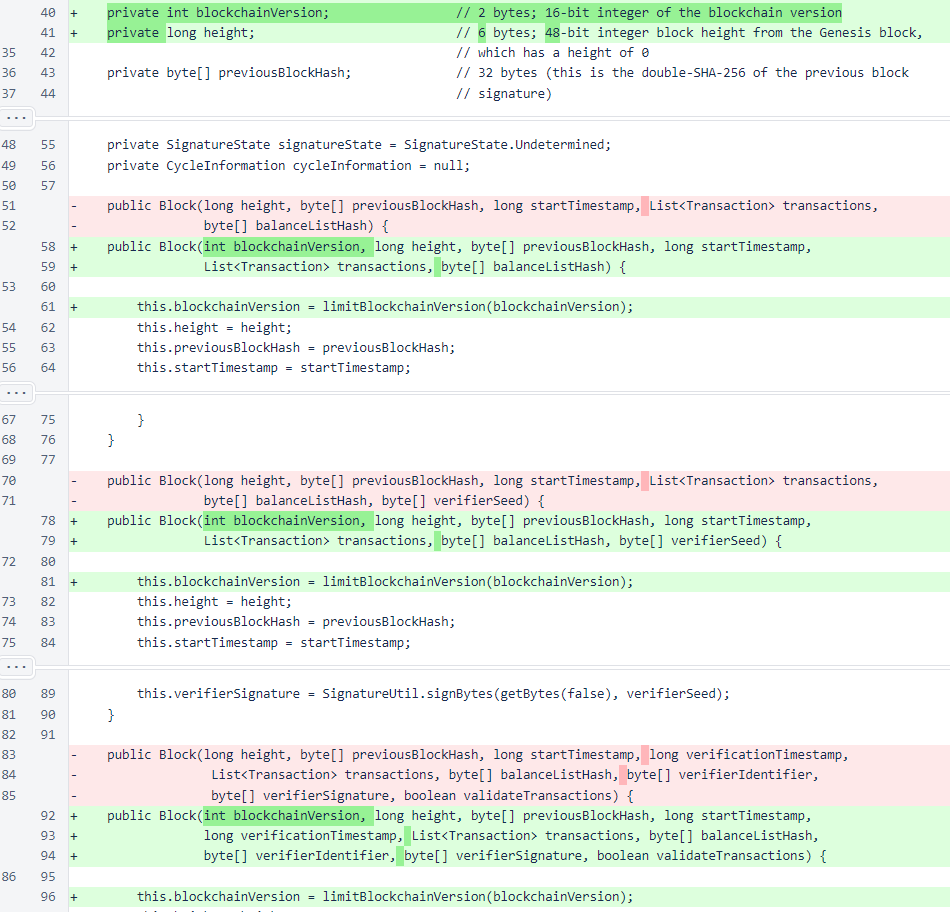The limitBlockchainVersion() method ensures that the blockchain version is always a version that this software knows how to process.
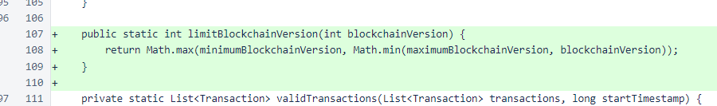An accessor has been added for blockchain version.
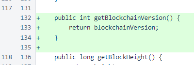In getByteSize(), FieldByteSize.blockHeight has been replaced with FieldByteSize.combinedVersionAndHeight. Both of these constants have a value of 8, but this change improves the readability of the code.
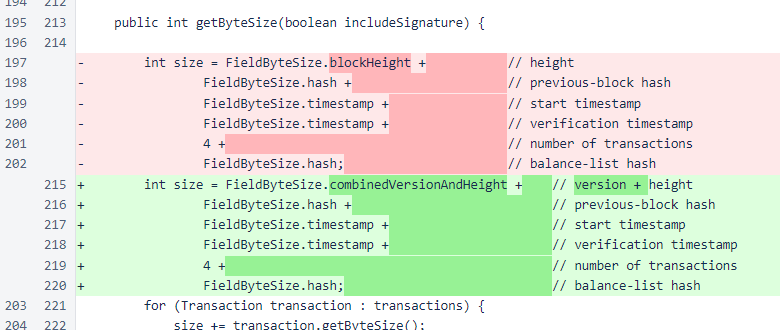In serialization of blocks, the space previously occupied by the height is now occupied by the combined version and height. This is the same pattern used for balance lists.
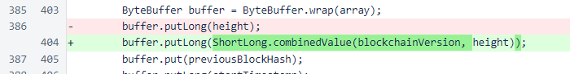In getMinimumVoteTimestamp(), two blocks are reserved specifically for new verifiers in each span of 50 blocks. In these blocks, a significant delay is added to voting for all current verifiers. The final block of the span, with a 40-second delay, will be used to allow sentinel broadcast of new-verifier blocks to mitigate denial-of-service attacks against verifiers trying to enter the cycle. The sentinel will be modified in the near future to complete this functionality.
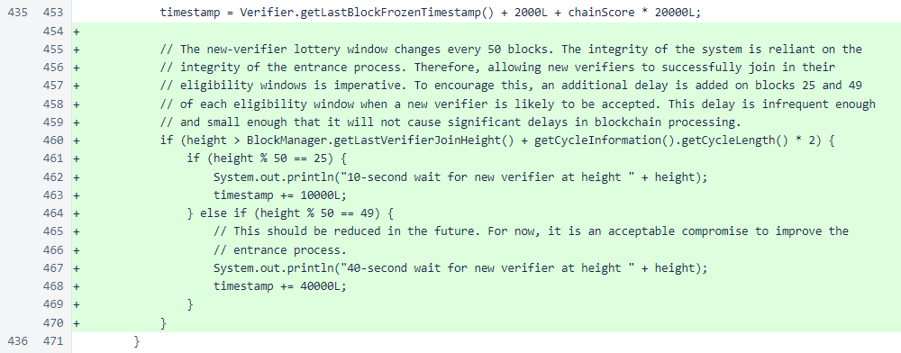Deserialization of blocks also accounts for the new blockchainVersion field.
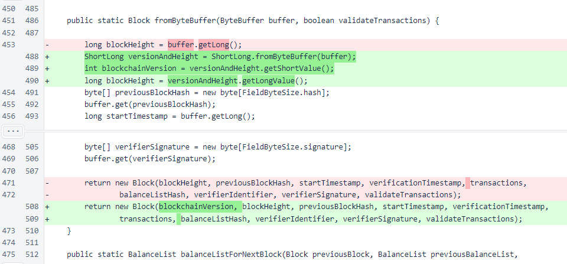The conditions in balanceListForNextBlock() have been restructured to make the logic easier to follow. Also, the previousUnlockThreshold and previousUnlockTransferSum have been added and are calculated for blockchain version 1.
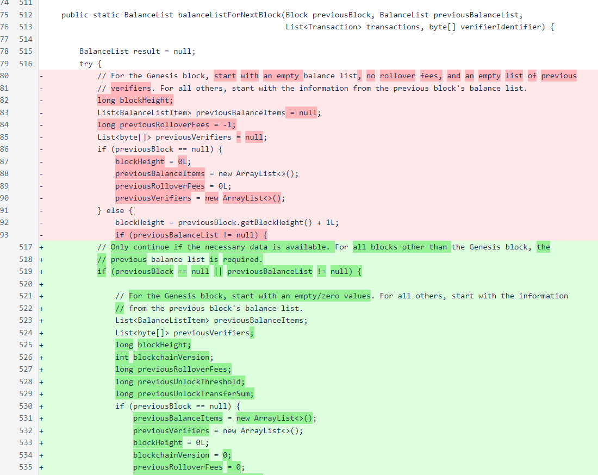In the vast majority of cases, the blockchain version will not change from one block to the next. The BlockchainVersionManager will handle all transitions to higher-numbered blockchain versions. Currently, the blockchain version is always fetched from the previous balance list, which will keep the blockchain at version 0 until the upgrade is implemented. Also, the unlock threshold and transfer sum are obtained from the previous block. These are both cumulative values.
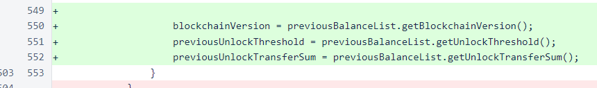In the transaction loop that adjusts balances and determines block fees, separate sums of organic transaction fees and transactions from locked accounts are now calculated. The organic transaction fees will be added to the unlock threshold, and the transactions from locked accounts will be added to the transfer sum.
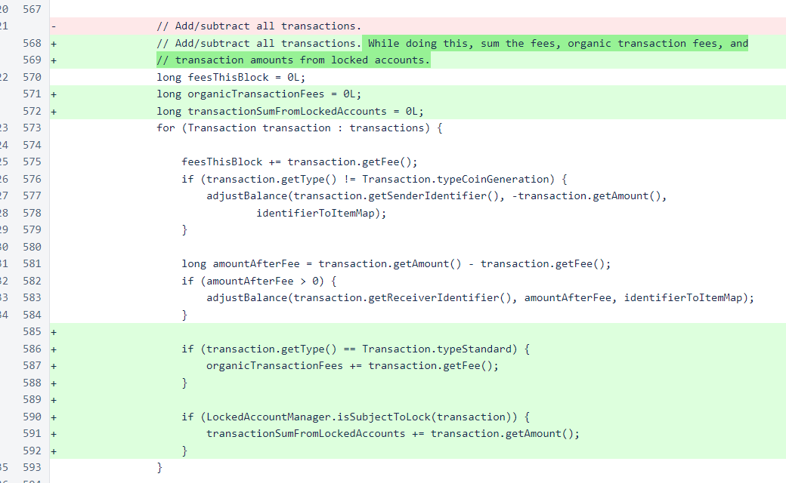Transfer of some fees to the seed account will be implemented in another update. This update is being released with incomplete functionality for blockchain version 1. This is being done to allow more time for community code review before the changes take effect, and it is being done to allow for continued release of bug fixes.
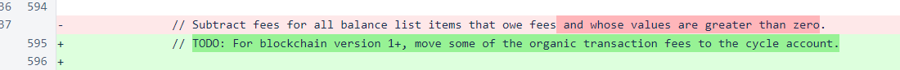The version-1 account fee modifications have been implemented. This will eliminate account fees for most accounts while promoting faster removal of accounts with very low balances.
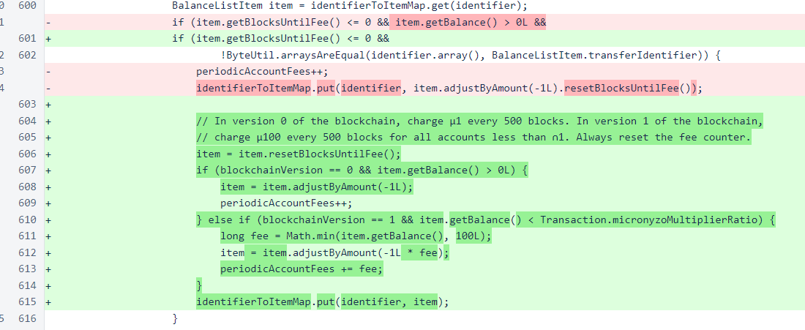For version 1 of the blockchain, the unlock threshold and transfer sum are accumulated. For version 0, they are both kept at 0.
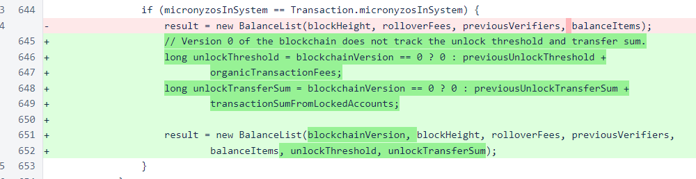Two options have been added to BlockFileConsolidator. These options will be implemented in a future version to allow operators of verifiers more choice in how storage and compute resources are utilized for maintaining historical blockchain data. While decentralized storage of a full history of the blockchain is important for the cycle as a whole, it is not necessarily important for each individual verifier to maintain a full history.
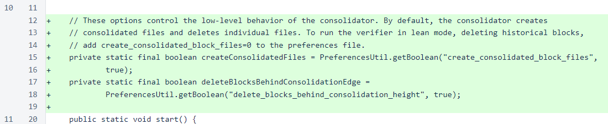In BlockManager, lastVerifierJoinHeight is now stored. This follows the same pattern as lastVerifierRemovalHeight, and it is used to provide a rough idea of when the cycle might be accepting new verifiers.

In BlockVoteManager.registerVote(), better checking of the Message argument has been added to avoid a null-pointer exception.
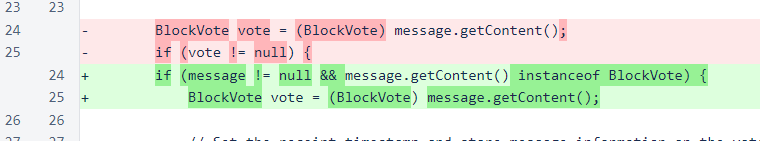BlockchainVersionManager will manage the upgrade from version 0 to version 1 of the blockchain. CycleTransactionManager will track all proposed cycle transactions.
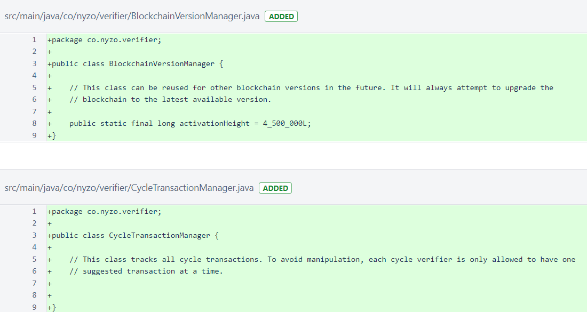In FieldByteSize, combinedVersionAndHeight has been added to represent the combined space that blockchain version and block height now occupy in the serialized forms of blocks and balance lists.
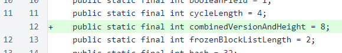LockedAccountManager catalogs all accounts publicly known to be controlled by the Nyzo team. This includes the official Nyzo verifiers, some "anonymous" verifiers that have been mentioned on Discord, the Genesis account, and all block-1 distribution accounts. The comments in the code provide a more detailed explanation.
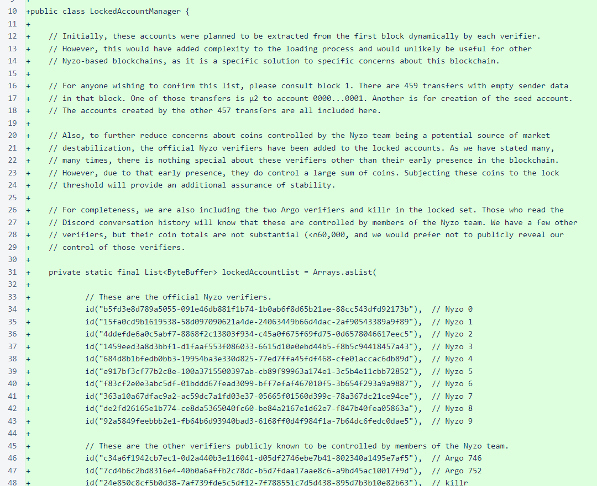To improve lookup efficiency, the locked accounts are stored in a Set.
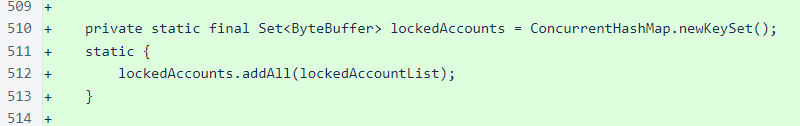The main() method of LockedAccountManager is a script that provides information about Nyzo circulation at the local frozen edge.
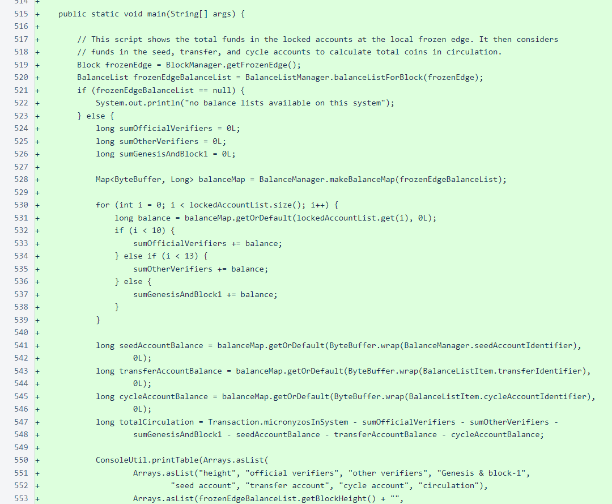The script output appears as follows.
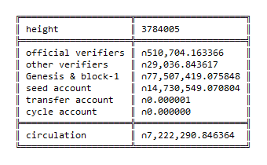The isSubjectToLock() method indicates whether a transaction must comply with the locking rules in version 1 of the blockchain. Seed transactions are not subject to locking, and transactions to the cycle account are not subject to locking. All other transactions from locked accounts are subject to locking.
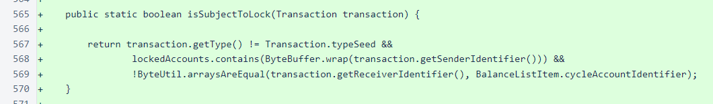The id() method exists to make the hard-coded locked-account list more succinct.
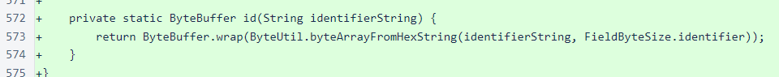The maximum_conncurrent_connections_per_ip can now be specified in the preferences file. This is a constant that we modified manually several times on the official Nyzo verifiers, and we are committed to running exactly the same code that we release to the community.
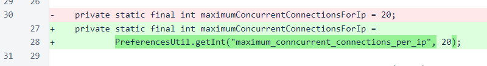The ShortLong class provides structure for the blockchain version and block height for blocks and balance lists. For the blockchain version, it uses the top two bytes that were previously allocated to block height. This leaves 6 bytes for the block height, which still allows for over 60 million years of blocks.
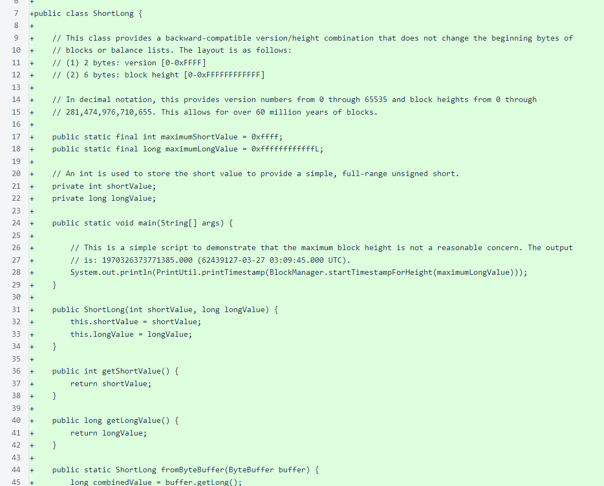TestnetGenesisBlockCreator now specifies a blockchain version of 0 for the first block. We plan to test the upgrade from version 0 to version 1 on several testnets before its scheduled deployment on the production blockchain. Also, a multiplication by 1L has been eliminated to silence an IDE warning.
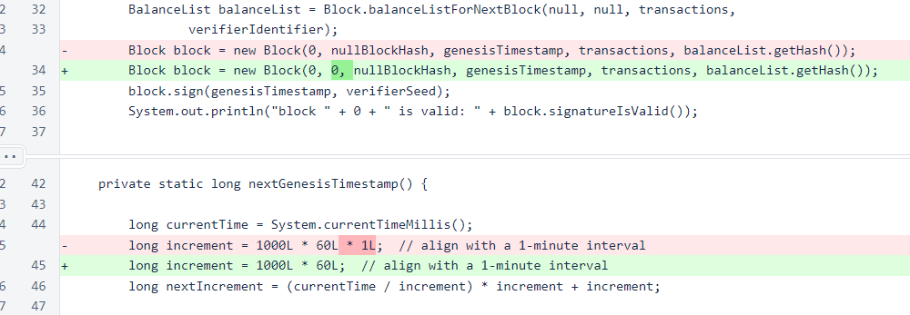Several modifications have been made to the Transaction class to prepare for transactions from the cycle wallet. Cycle transactions will require a list of signatures — more than 75% of the current cycle — to be approved. Several other pieces still need to be implemented to support cycle transactions.
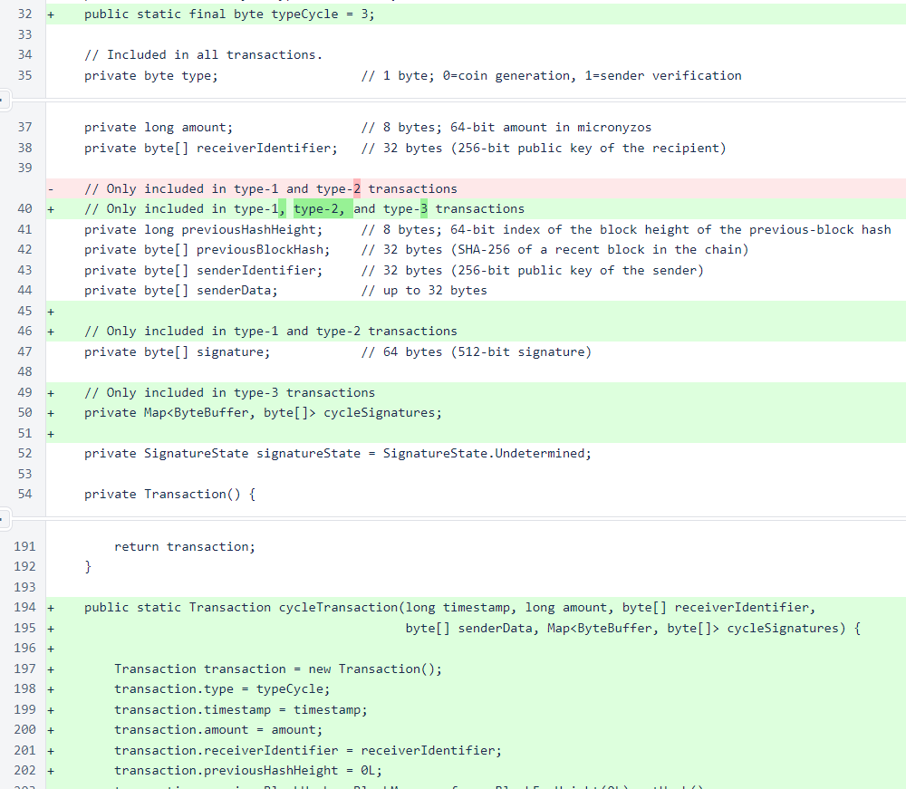The signatureIsValid() method has been modified to ensure that single signatures are only accepted for seed and standard transactions. This is not an actual security concern for the cycle wallet, as the 0000...0002 wallet is obviously a wallet for which a private key is not available, but it is still a reasonable precaution to reduce the potential for problems if other multi-signature transactions are added in the future.
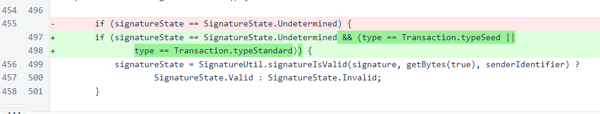In UnfrozenBlockManager, the current vote is now persisted to disk. This ensures that the verifier will not cast an arbitrary vote when it restarts that contradicts a previous vote.
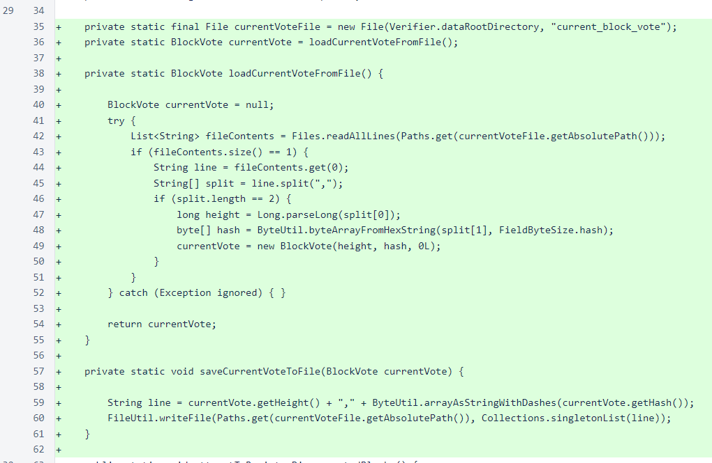In the updateVote() method, the newVoteBlock variable has been eliminated. This variable was only used as a temporary store of the hash of the vote, and its use was confusing and unwieldy. Now, the hash of the vote is immediately stored in the newVoteHash variable in all cases.
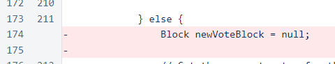When this verifier does not yet have enough information to attempt to reach consensus, it now falls back to its previous vote before attempting to calculate a vote independently. Most of the time, this logic is totally unnecessary. If many verifiers restart while the blockchain is stalled, this will help to ensure that the verifiers do not inadvertently reach consensus on a new block when consensus has already been reached on a different block. While this is not the only safeguard that will be put in place in response to the recent consensus issues, this safeguard, on its own, would have easily avoided the recent issues that caused so many verifiers to be dropped from the cycle.
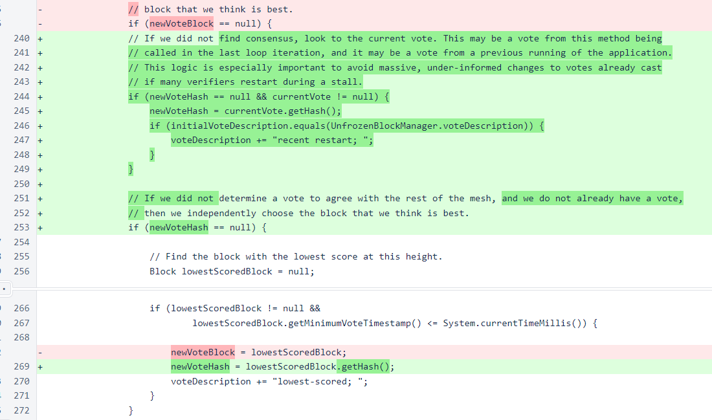Whenever the vote changes, it is written to a file so that it will be available if the verifier restarts.
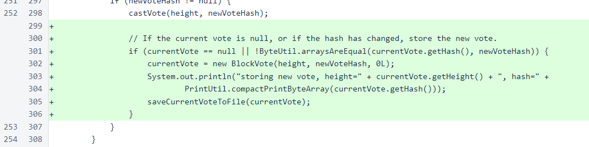In Verifier, a small block-vote-request process has been reintroduced. This old block-vote-request process was eliminated previously because it added significant additional strain to the cycle. This is a much lower-intensity process than the previous process, querying no more than 10 votes every 4 seconds. Block-vote requests are especially useful for one specific reason: if a group of verifiers have frozen a block and have moved on to working on the next block, they will no longer proactively send votes for the block that they think the cycle has already frozen. These requests allow the verifiers stuck on the previous block to re-involve the verifiers in the next block in the previous block's consensus process, giving the verifiers on the next block the opportunity to encourage the other verifiers to move forward to the correct block. This safeguard, on its own, would also have avoided the recent issues that caused so many verifiers to be dropped from the cycle. This vote-request process also helps to reestablish lost connections to verifiers that have suffered temporary outages, and it will enable faster recovery in many cases for verifiers that suffer tracking issues.
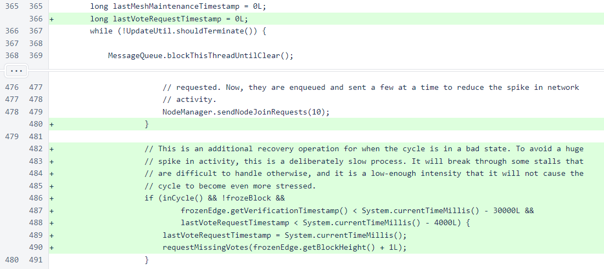The actual vote requests are made to random in-cycle verifiers. As the comment explains, this random process is less efficient than a targeted process would be, but it also provides a simple robustness that is desirable.
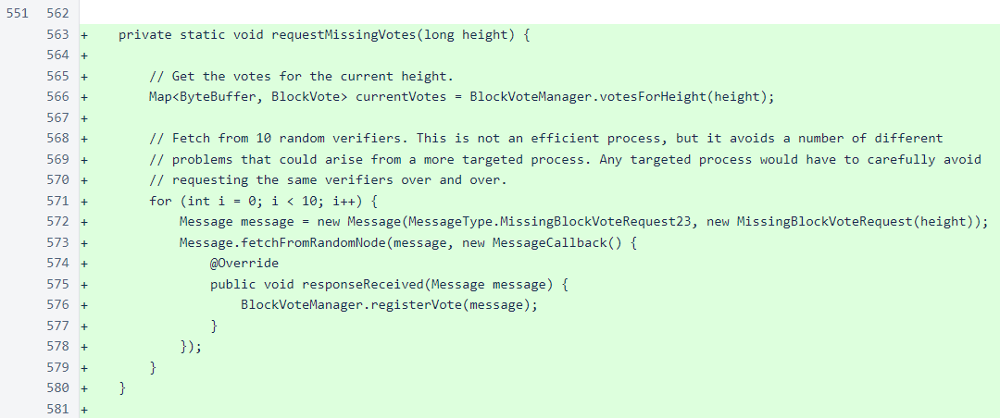Blocks are currently created with the same blockchain version as their predecessors. When BlockchainVersionManager is complete, it will handle the transition from version 0 to version 1.
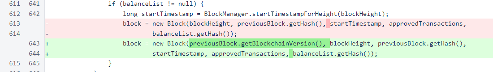The last join height is displayed just before the last removal height in the status response.
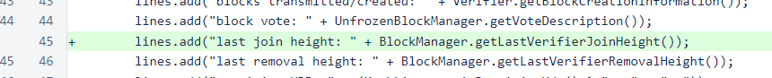The sentinel does not attempt to upgrade the blockchain version, and it will never need to do so. This will be explained further when the upgrade process is fully implemented.
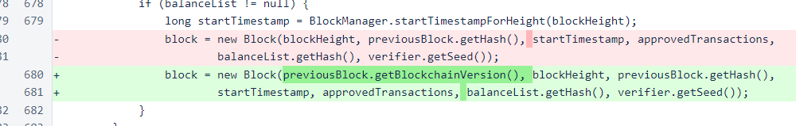ShortLongTest stores and retrieves 40,000 combinations of values in ShortLong objects to ensure no loss of information occurs due to this data structure.
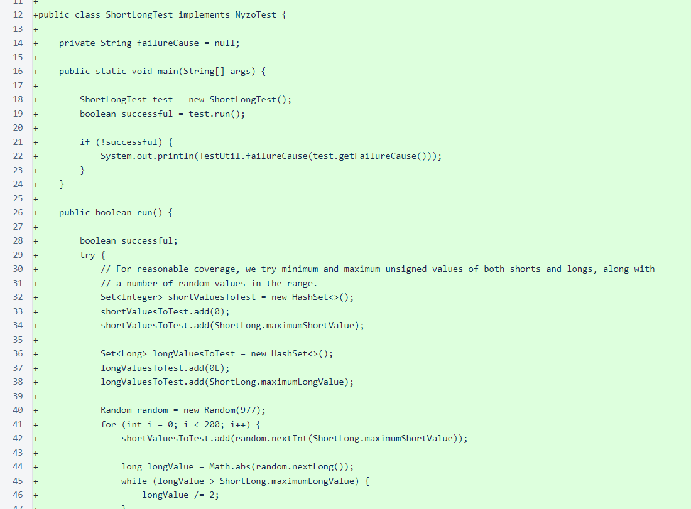For backward compatibility with version-0 blocks, the ShortLong encoding is also checked for equality against raw long values.
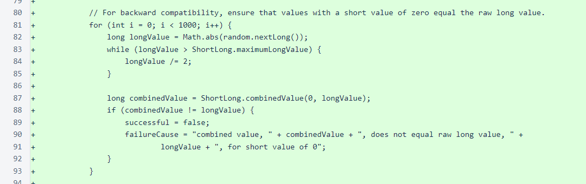A new method for printing Nyzo amounts has been introduced to PrintUtil. This method is used in the LockedAccountManager script that shows how many coins are currently in circulation.
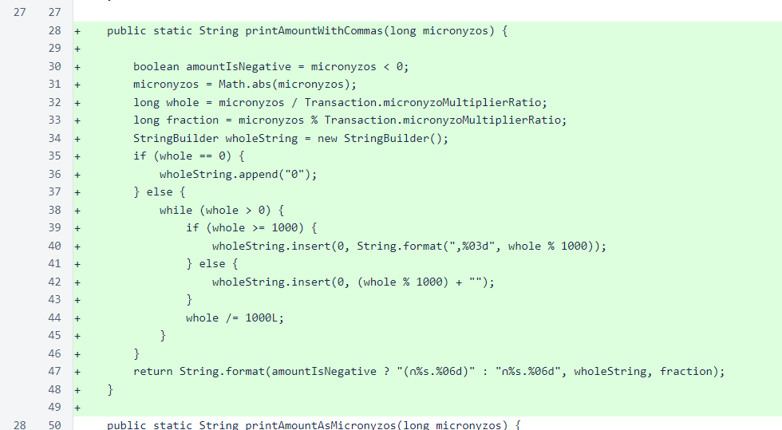